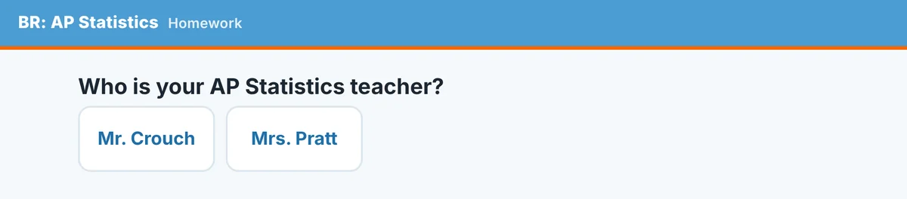
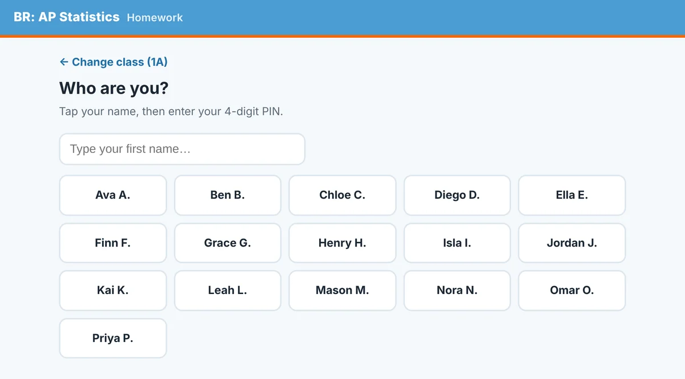
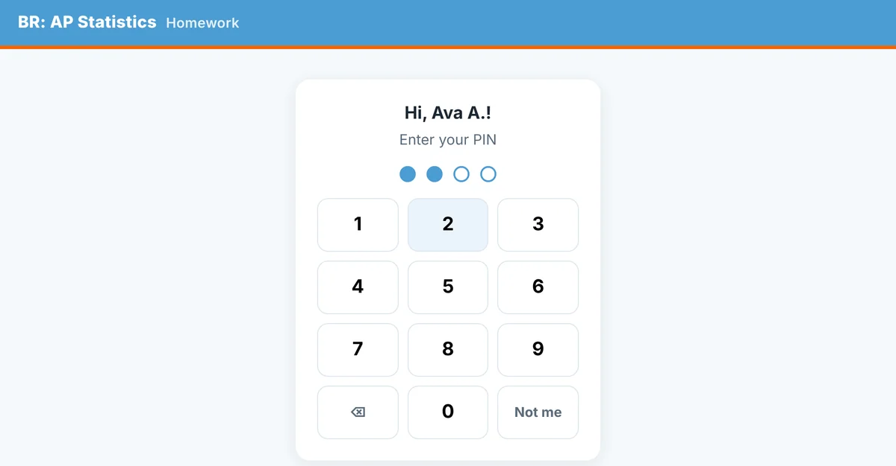
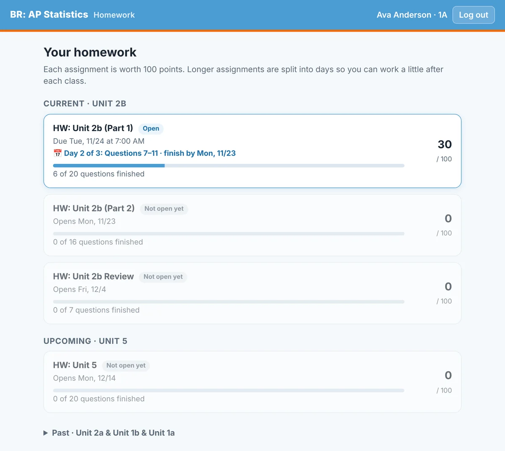
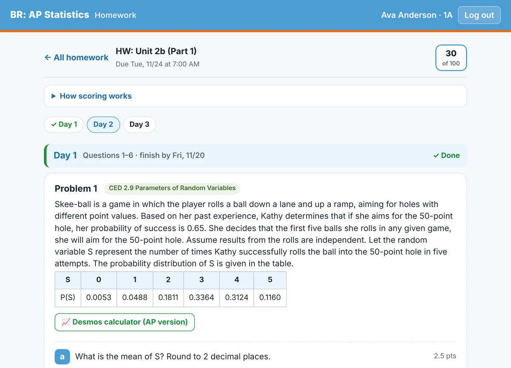
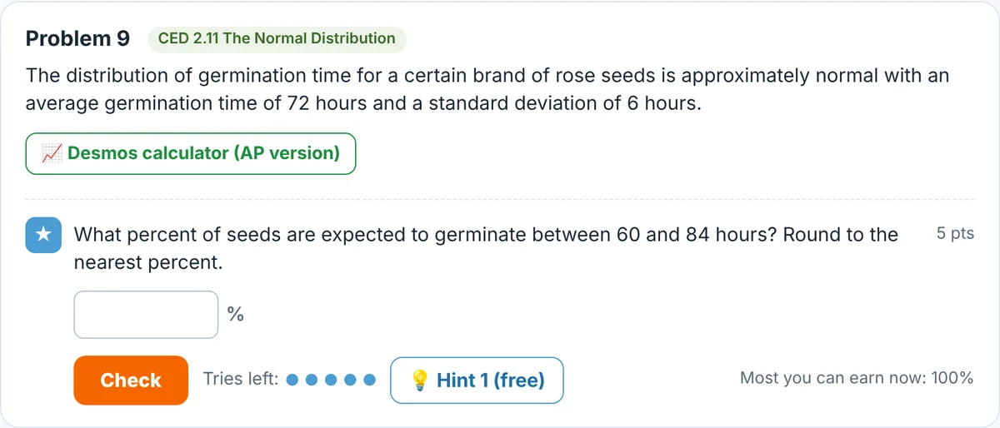
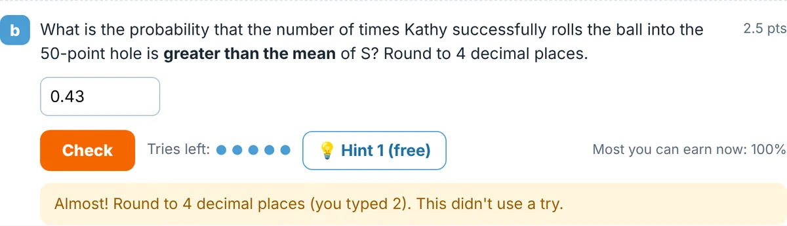
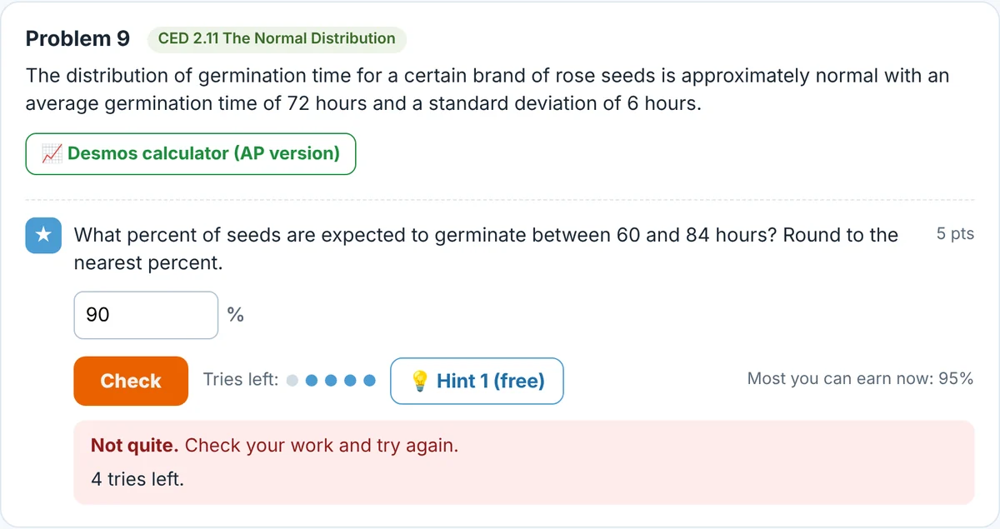
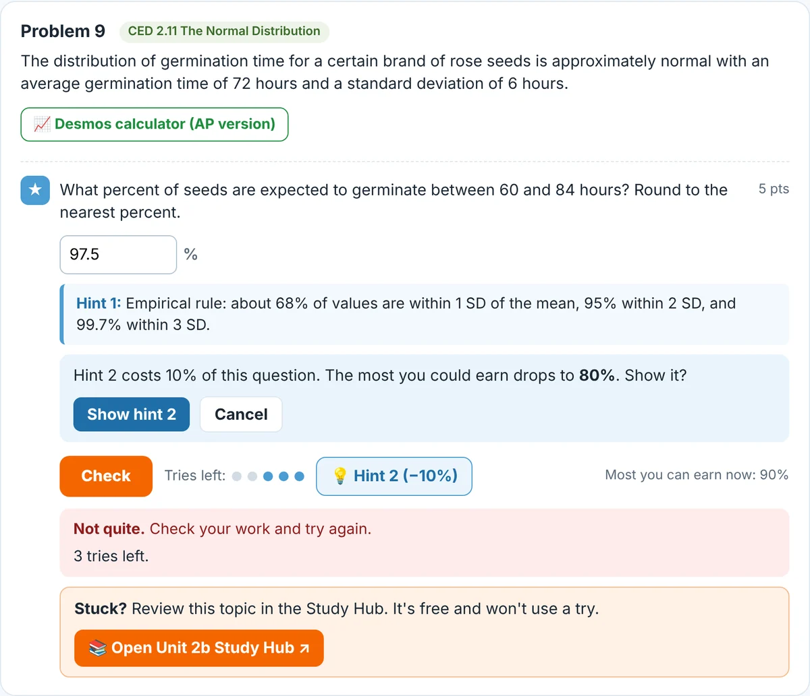
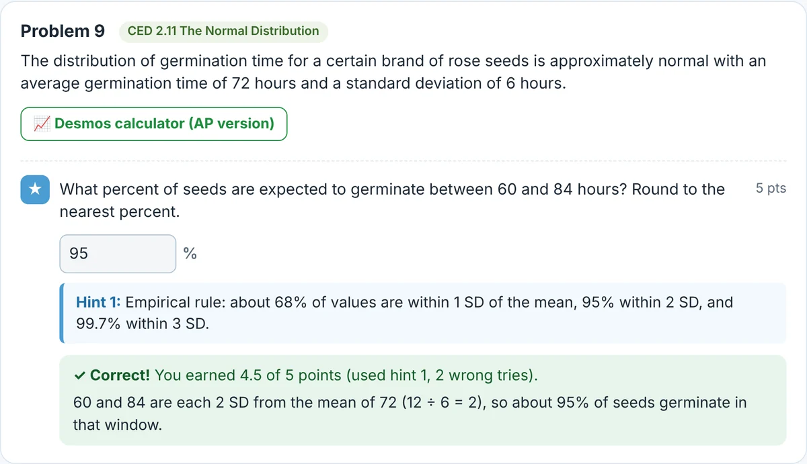

How the AP Stats homework site works
For students of Mr. Crouch and Mrs. Pratt. Everything you need to log in, do your homework, and get help when you're stuck.
1Logging in
- Go to bit.ly/APStatsHW and tap your teacher.
- Tap your class period (for example, 1A).
- Tap your name. You can also start typing your first name to find it faster.
- Type your 4-digit PIN. Your teacher gave it to you on a slip of paper.



2Your homework list
After you log in, you'll see your homework sorted into three groups:
- Current: the unit we're working on now. Start here.
- Upcoming: assignments in the next unit. You can see when they open, but you can't start them yet.
- Past: units we've finished. Tap to open the list. If you still have late work you can turn in, it opens by itself.

| Label | What it means |
|---|---|
| Open | You can work on it now. The due date is shown underneath. |
| Not open yet | It opens on the date shown. |
| Late | The due date passed, but you can still finish it for points (with a small late penalty) until it closes. |
| Closed | No more points, but you can open it to see the answers and explanations, which is great for studying. |
Your score for each assignment (out of 100) is on the right side of its card.
3Days inside an assignment
Longer assignments cover several lessons, so they're split into days. Do each day's questions after that day's lesson. For example:
- Day 1 = Questions 1–6, after the first lesson
- Day 2 = Questions 7–11, after the second lesson

- Tap Day 1 / Day 2 / Day 3 at the top to jump to that day. The assignment opens to the first day you haven't finished.
- "Finish by" dates are suggestions to keep you on pace. Only the assignment's due date counts for late points.
- Your homework list shows which day you're on.
4Answering questions
Type your answer (or pick a choice), then tap Check. You find out right away if it's right.

- Tries left: you get 5 tries per question. Each dot is one try.
- Most you can earn now shows the most you can still get on that question.
- 📈 Desmos calculator (AP version) opens the same Desmos calculator you'll use on the AP exam, right on the page.
- Your work saves every time you tap Check, so you can stop and come back later.
Follow the rounding directions
If your answer is right but not rounded the way the question asks, you'll see "Almost!" and it won't use a try. Just fix the rounding and check again.

Wrong answers
A wrong answer uses a try. Sometimes you'll get a message about a common mistake, like using the wrong tail of a distribution.

5When you're stuck
💡 Hints
Each question has up to 3 hints, and each one gives a little more help.
| Hint | Cost |
|---|---|
| Hint 1 | Free |
| Hint 2 | −10% of that question |
| Hint 3 | −20% of that question |
Only your biggest hint counts; hint costs don't add up. Before showing a hint that costs points, the site asks you to confirm.

📚 Study Hub
After 2 wrong tries on a question, a link to the unit's Study Hub appears. It has notes and examples for the topic. Opening it is free and doesn't use a try.
Out of tries
If all 5 tries are wrong, that question scores 0, and you'll see the correct answer with an explanation so you can learn from it.
6Points and late work
- Every assignment is worth 100 points, split evenly among its questions.
- Each question starts at 100%. Each wrong try takes off 5%, and hints 2 and 3 cost what's shown above.
- If you get a question right, you always keep at least 50% of its points.
- Homework is due at 7:00 AM on the due date.
- Late work loses 2% per school day (a right answer still keeps at least 50%).
- Homework closes 10 school days after the unit test. After that you can still view it, but you can't earn points.

7Problems? Start here
- I forgot my PIN.
- Ask your teacher. They can look it up or give you a new one.
- It says I'm locked out.
- Too many wrong PINs. Wait 5 minutes and try again, or ask your teacher to unlock you.
- My name isn't on the list, or I'm in the wrong class.
- Tap "← Change class" to make sure you picked the right teacher and class period. If your name still isn't there, tell your teacher.
- The site logged me in as someone else.
- Tap Log out in the top corner, then log in as yourself.
- I think a question is marked wrong by mistake.
- Tell your teacher which assignment and question. If the answer key needs a fix, they can re-score it for everyone.